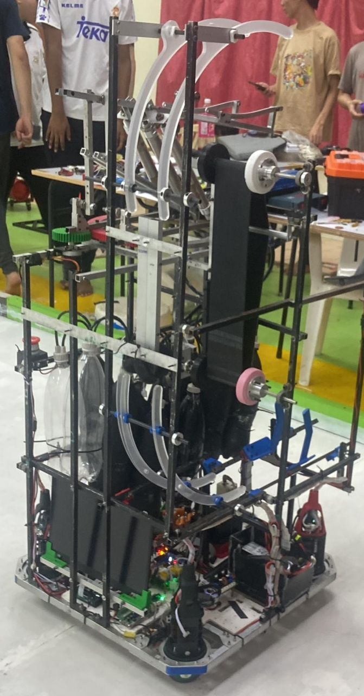

Hassan Murtada, robotics software engineer
From sensor driver to vehicle behaviour, and every layer in between.
I'm a final-year Electrical Engineering student at Universiti Teknologi Malaysia. Since 2023 I've been writing the software that sits between sensors and machines: perception pipelines, ROS 2 systems, and the embedded firmware underneath them. Most recently that meant an Autoware Universe autonomy stack on full-size vehicles in live road testing.
Vehicle autonomy
Most autonomy work isn't inventing planners. It's making a stack that works in a paper behave itself on a real vehicle, on a real road, with a person sitting in it.
As an Embodied AI Autonomous Driving Engineering Intern, I worked on an Autoware Universe stack deployed on full-size vehicles. The platform drove over 50 km autonomously across campus and road routes, measured as distance actually driven, not route length on a map.
My work sat at two ends of the stack. At the bottom, the vehicle interface: translating the planner's output into the low-level commands the vehicle's drive-by-wire layer accepts, and the autonomous emergency braking behaviour that runs on top of it. At the top, perception: I took the vehicle from LiDAR-only sensing to a working camera–LiDAR fusion pipeline, including the calibration it depends on.
In between is the part nobody writes about: diagnosing why the vehicle did something strange two hundred metres ago. Localisation drift, actuation latency, handoff between planner and controller. That is most of the job, and it's the part I learned the most from.
Engineering note
A LiDAR knows where things are but not what they are. A camera knows what things are but not where. Fusion exists to move information across that gap, and it only ever moves in one direction.
A LiDAR measures time of flight, so its range is direct and metric: a point at 12.4 m is at 12.4 m. It has no idea whether those points are a traffic cone or a fire hydrant. A camera has enormous angular detail (colour, texture, lettering), but a pixel only tells you the ray the light arrived along, not how far along it the object sits. That's scale ambiguity, and it's geometry, not a hardware limitation to engineer away.
So fusion asks one question, over and over: given a 3D point, which pixel does it land on? Answer that and you can read off what the camera saw there and attach it to the point. The reverse, recovering 3D from a pixel, is not available, because the projection divides by depth and destroys it.
Everything above rests on ten numbers: six extrinsic, four intrinsic. Get them wrong and nothing crashes, nothing warns you. The projection simply lands in the wrong place, and the system confidently attaches the wrong label or drops the object entirely.
An angular error of θ displaces the projection by roughly d · tan θ at distance d. That gets bad faster than intuition suggests:
| Rotation error | At 10 m | At 30 m | Consequence |
|---|---|---|---|
| 0.5° | 8.7 cm | 26 cm | Tolerable |
| 1.0° | 17 cm | 52 cm | Match quality degrades |
| 2.0° | 35 cm | 105 cm | A pedestrian falls outside their own box |
At 5 m/s, a 100 ms timing mismatch means the vehicle moved half a metre between the LiDAR sweep and the camera frame. Everything projects 50 cm off, and it is indistinguishable from a calibration error in the output while having a completely different cause. A spinning LiDAR makes this worse: points at the start and end of a single sweep are already a full rotation period apart.
Fusion frameworks are written on the assumption of a full camera ring. Under that assumption, a sensible default says: if no camera saw it, it's probably noise, so discard it. Inherit that default on a vehicle with one forward camera and a detector that has never seen your object class, and enabling fusion takes you from "detected, but unlabelled" to "not detected at all."
This note is written from general principles. It contains no configuration, parameters, hardware layout or source from my employer's vehicles.
Competition robot
Autonomous scoring, on a competition floor, against a clock. The interesting constraint wasn't accuracy. It was that everything had to happen inside a frame, on a small onboard GPU, and never hang.
I owned the software from the camera to the motor command: the detector that finds the basket, the projectile-motion solver that computes launch velocity and angle from the measured distance, the localisation, and the micro-ROS link down to the board. A teammate built the STM32 mainboard firmware; I built on top of it, against an interface we agreed on first.

Earlier work
Capability
Listed by where it sits in a robot rather than by category, because that's how the work actually divides.
Record
Contact
I'm most interested in work where the software has to survive contact with real hardware: autonomy, perception, robotics platforms. Happy to go into any of the above in more detail, including the parts that didn't work.